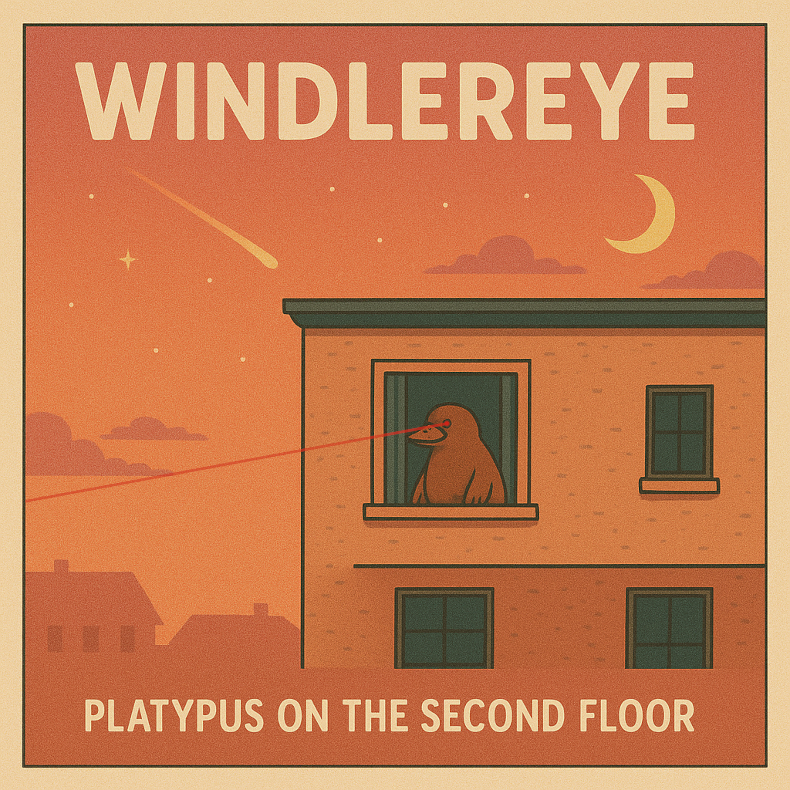

[Verse 1]
Red lights flare across the street
Every driver holds a stare
Engines rumble low, missing a beat
Twenty seven eyes looking everywhere
[Chorus]
We dance in sync, we scream and spin
We bend the street, we carve the grin
Mirrors flare, all in line
Hands strike the air sketching signs
We dance in sync, we yell and swear
We hold the jam up in the air
And while we thought and yelled and hid
We drew an ancient magic grid
[Verse 2]
Horn blasts cut the space, pulse won't spare
Pedals press and lift in whispered solitaire
Every lane, a ribbon pulled in glare
I lean back and watch it move, it's the whole square!
[Chorus]
We dance in sync, we scream and spin
We bend the street, we carve the grin
Mirrors flare, all in line
Hands strike the air sketching signs
We dance in sync, we yell and swear
We hold the jam up in the air
And while we thought and yelled and hid
We drew an ancient magic grid
[Verse 3]
The man ahead shakes fists, a brutal chant
The woman beside rolls eyes, air vents slant
Exhaust coils curl, a slow pirouette grant
Tires inch forward, retreat, "no, you can't!"
[Bridge]
Mirrors fold, fingers low
Engines marching, the jam dissolves
Headlights fade
Now we're moving
I'm still watching
Ah, maybe another day
[Chorus]
We dance in sync, we scream and spin
We bend the street, we carve the grin
Mirrors flare, all in line
Hands strike the air sketching signs
We dance in sync, we yell and swear
We hold the jam up in the air
And while we thought and yelled and hid
We drew an ancient magic grid
[Verse 1]
We made a ladder out of acronyms
And expected everyone to be a sociopathic clown.
Someone's working on the spreadsheet,
Their task is to spread the sheet around.
We sign our names like signatures on wet paper.
We rank, we nudge, we bow.
There is always hard work to do,
You can get at it nicely or you can plough.
[Pre-Chorus]
They slow the clock so the coffee can wake them up.
They staple time to a postcard and mail it to next week.
[Chorus]
You're the designated idiot!
Hold the line, hold the queue, make the meeting wasted.
You're the designated idiot!
Copy the thing, now it's yours, hand it back when pasted.
You're the designated idiot!
We stick in broken calendars and call delay a kind of feat.
You're the designated idiot!
If you can't spot the idiot, friend, I'm sorry to say: you fit the seat.
[Verse 2]
He files the status as "shipped" with a smiling stamp of lint.
She schedules breakfast for the quarter hour that only exists in print.
They send a tracker that points to Atlantis and a courier named Maybe.
They deliver empty cardboard and claim the invoice says "daily."
[Pre-Chorus]
They RSVP "attending", working from home or homing from work?
They put a sticky-note spear through a deadline and whisper "hold the line."
[Chorus]
You're the designated idiot!
Hold the line, hold the queue, make the meeting wasted.
You're the designated idiot!
Copy the thing, now it's yours, hand it back when pasted.
You're the designated idiot!
We stick in broken calendars and call delay a kind of feat.
You're the designated idiot!
If you can't spot the idiot, friend, I'm sorry to say: you fit the seat.
[Verse 3]
They are the soft brake
That keeps the comet from slamming into the cake.
They are the chaos
That lets us learn from every one of their mistakes.
They are the human comma
That pauses a sentence before the scream.
They fold the universe like laundry
And hand it back with a seam.
[Bridge]
Badge says "Not a problem, mostly."
Sign here. Smile. Forget. Progress.
[Chorus]
You're the designated idiot!
Hold the line, hold the queue, make the meeting wasted.
You're the designated idiot!
Copy the thing, now it's yours, hand it back when pasted.
You're the designated idiot!
We stick in broken calendars and call delay a kind of feat.
You're the designated idiot!
If you can't spot the idiot, friend, I'm sorry to say: you fit the seat.
[Outro]
Designated.
Idiot.
Taste the badge. Keep it warm. Keep the project human.
[Verse 1]
All the rooms are mirrors, they wait for me to bend
Every eye a question, every whisper a loose end
Burning daylight in my jaw, the ache sets in
They want the tremor
They want the fall
I just grin
[Chorus]
Smile! Louder than a scream
Until their hatred rots
The crown inside my dreams
Teeth shining while the silence talks
Smile! Smile!... Smile! Smile!
[Verse 2]
Hands cold, bones burning under the skin
Footsteps echo on floors too thin
The breath of wolves fills the empty hall
I hold it steady
I give them nothing but
The fall
[Bridge]
The crowd leans closer, they smell the bleed
Their shadows swarm, they bare their teeth
I taste iron but I don't break
The grin grows wider, they know I'm awake!!
[Chorus]
Smile! Louder than a scream
Until their hatred rots
The crown inside my dreams
Teeth shining while the silence talks
Smile! Smile!... Smile! Smile!
[Outro]
Louder than a scream
[Verse 1]
Dry ground growing nails and bones
The day won't die in stupid drones
Glass-eyed kings beneath the dome
I hear their hymns, they turn to stone
[Verse 2]
Sweat runs deep, it cuts my spine
The bells are rung but none divine
Hollow mouths go and speak in time
Ash in my hands, and still we climb
[Chorus]
The sun bites through the skin
It won't forgive, it won't give in
We built our graves in daylight thin
And burned the shade we sheltered in
[Verse 3]
Iron fields they shake and quake
Rust and blood in every take
Blind saints kneel, their fingers break
The sky's eye looks upon a snake
[Chorus]
The sun bites through the skin
It won't forgive, it won't give in
We built our graves in daylight thin
And burned the shade we sheltered in
[Bridge]
Horizon crawls in broken lines
No shadow left, no place to hide
I scream until my tongue is dead
The sun won't blink
Or so it said
[Chorus]
The sun bites through the skin
It won't forgive, it won't give in
We built our graves in daylight thin
And burned the shade we sheltered in
[Outro]
The sun won't sleep
The day won't die
It only breathes
It only blinds
[Verse 1]
Water bends beneath my hand
The ripple echoes my command
Feathers float on liquid glass
Every small motion carries the past
[Verse 2]
A bird lands heavy with no sound
Claws dig lines in the shallow ground
I touch the water, it wets my skin
I remember what I let sink in
[Chorus]
Birdbath, the water strikes
Raise your wings and tear the skies
Shatter the drops where the shadows lie
Oh, it is holy and high
[Verse 3]
I hear the splash before it lands
Confession written in liquid hands
Feathers scatter, the wind bends back
I chase the soul that slips the track
[Chorus]
Birdbath, the water strikes
Raise your wings and tear the skies
Shatter the drops where the shadows lie
Oh, it is holy and high
[Verse 4]
Everything cleansed leaves a mark
Every reflection hides the dark
I am careful not to blink
Or the moment will drown and sink
[Chorus]
Birdbath, the water strikes
Raise your wings and tear the skies
Shatter the drops where the shadows lie
Oh, it is holy and high
[Intro]
Two lamps flicker in a kitchen too small for our rage
You spill your coffee, the comet scoffs, the ceiling starts to cave
Outside, up there, the stars roll past in glassy parades
We bite at each other's names while the universe winks and fades
[Verse 1]
Your hand finds mine, then twists the light away
The coffee drips, the comet dips, the walls begin to sway
We laugh through teeth that grind the arguments we lose
Each word a spark, each spark a mark, a mark we can't refuse
Outside, the city folds into a toy, a cradle too small to hold
Our voices ricochet, echo play, the void applauds, polite and cold
[Chorus]
Stupid Creatures!
We build and burn and build again
Stupid Creatures!
Biting hands, spreads the pain
Stupid Creatures!
We call it love, we call it war
Stupid Creatures!
Spinning circles the stars ignore
[Verse 2]
You trace the scar that lines my arm and say it doesn't matter
But syllables shatter, scatter, clatter like distant batter
I remember ashes of our fights, and you collect them in a jar
Meanwhile, a star burns in a seconds what we've built over a year so far
A galaxy wobbles, unsure if it wants to exist, or just pretend
Digital anomaly while we argue over dishes, crumbs of cosmos in the end
[Bridge]
I see your reflection in the microwave, it grins, tiny and spiteful
Somewhere the Milky Way encodes a lullaby, distant, beautiful, frightful
Hands like planets, spinning too close to collide and bend
Faces like satellites orbiting conversations that never end
[Chorus]
Stupid Creatures!
We build and burn and build again
Stupid Creatures!
Biting hands, spreads the pain
Stupid Creatures!
We call it love, we call it war
Stupid Creatures!
Spinning circles the stars ignore
[Outro]
The lamps die one by one, shadows curl and creep
Your hand slips from mine, unnoticed in the heap
The stars scatter like spilled body and mind
Two stupid creatures, curling in the dark, lost in time
[Verse 1]
Your body's a carnival, step right inside!
Heart beating drums at a hundred a ride
The color red you see may not be the one I know
Babies have more bones, but they merge as they grow
You can't lick your elbow, try if you dare
Hair keeps growing long after you're not there
Blood makes a river, bones make a frame
Your stomach rebuilds itself — isn't that insane?
[Chorus]
One hundred fun facts about your body! (WHAT?)
It's wiggly, it's jiggly, it's full of odd hobbies! (YEAH!)
Your brains are a maze, your tongue is elastic! (WOO!)
One hundred fun facts, fantastic!
[Verse 2]
Your left lung's smaller 'cause your heart's is by its side
You shed two hundred pounds of skin before you die
Your belly button grows a bacterial zoo
Your veins buzz quietly in key of blue
A yawn can trigger déjà vu
Your skin's in love with the shape of you
Your mouth can never taste itself
Your pulse will shift with the sound of a bell
[Chorus]
One hundred fun facts about your body! (WHAT?)
It's wiggly, it's jiggly, it's full of odd hobbies! (YEAH!)
Your brains are a maze, your tongue is elastic! (WOO!)
One hundred fun facts, fantastic!
[Verse 3]
Your knees are elbows flipped upside down
Sweat's full of oxygen, if you sink in it you can't drown
One out of ten people has a third round of teeth
One out of a million has a fourth underneath
Two hundred neurons die every time you sneeze
Your livers release dopamine every time you say please
Eating orange rind is healthy, great taste!
Some even claim it reduces food waste
[Chorus]
One hundred fun facts about your body! (WHAT?)
It's wiggly, it's jiggly, it's full of odd hobbies! (YEAH!)
Your brains are a maze, your tongue is elastic! (WOO!)
One hundred fun facts, fantastic!
[Chorus]
ONE HUNDRED FUN FACTS ABOUT YOUR BODY!
WIGGLY, JIGGLE, WHATEVER WHATEVER!
YOUR BRAINS ARE SOMETHING SOMETHING ELASTIC!
BLA BLA BLA BLA FANTASTIC!
[Verse 1]
Slide through doors like they're made of glass
Shake hands firm, let the weaklings pass
Spill my drink, but I still look sly
Tip my hat to the clouds in the sky
Step over puddles without a splash
Count my steps while the city slaps
[Chorus]
I'm the class in the crass, the smoke in the joke
The man in the hat, the lunatic in the attic
The key in the lock, the tick in the clock
The grin in the sin, tissue paper in the bin
The grape in the wine, the crime in the rhyme
The crack in the ass, the pass in the class
[Verse 2]
Bought a sandwich, spilled it on the floor
Wrestled with a raccoon outside the store
Read a story that grew into a town
Walked past my reflection, it wore a frown
Folded laundry like a sword in a fight
Watched the ties bow to my sheer delight
[Chorus]
I'm the class in the crass, the smoke in the joke
The man in the hat, the lunatic in the attic
The key in the lock, the tick in the clock
The grin in the sin, tissue paper in the bin
The grape in the wine, the crime in the rhyme
The crack in the ass, the pass in the class
[Bridge]
Mirror cracked, but I still look fine
Neighbors peek, think I bend time
Streetlights wink at me, when I walk below them
Am I electrostatic or a switcheroo?
I dance with shadows in the middle of the groove
And tiptoe sideways past the lion's den
[Chorus]
I'm the class in the crass, the smoke in the joke
The man in the hat, the lunatic in the attic
The key in the lock, the tick in the clock
The grin in the sin, tissue paper in the bin
The grape in the wine, the crime in the rhyme
The crack in the ass, the pass in the class
[Verse 1]
I was minding my bite, watching midnight behave like a cat in a hat
Fridge light came on like a game show host, said "answer: snack"
Opened the door and the house leaned in, all my spoons yelled "rat-a-tat-tat"
Calorie deficit in the fridge, ate all cookies in Pepperidge
I signed a treaty with a cheesecake, broke it quick, now treaties hold a grudge
My belt formed a union and demanded a bridge
Across the canyon between button and budge
[Pre-Chorus]
My treadmill ran away to find a slower job
I used the gym card as a coaster for corn-on-the-cob
Neighbors felt a tremor when I inhaled a cobbler
Ate the thunder, burped the lightning, now the clouds talk softer
[Chorus]
OOPS, I GOT FAT!
Blame it on a midnight, blame it on a snack trap
OOPS, I GOT FAT!
My shadow filed paperwork to get its width back
OOPS, I GOT FAT!
Chair said "whoa", table said "we'll adapt"
OOPS, I GOT FAT!
I made a pact with appetite: we'll cut it in half… then add it right back
[Verse 2]
Pantry whispered "maybe stop," my fork replied "absolutely not"
I poured granola like confetti, caught it on a tongue that learned to juggle pots
Microwave dinged like a cathedral bell; I measured time in brownies per chime
I balanced on a promise to behave - snapped the promise, ate the line
Doing four diets at once sucks, it's really hard to eat that much
[Pre-Chorus]
I tracked my macros in a funhouse mirror
Macros tracked me back and asked for dinner
Steps on my phone? I measured in bites
If chewing is cardio then I run all night
[Chorus]
OOPS, I GOT FAT!
I did the math and the math got mad
OOPS, I GOT FAT!
Gravity DM'ed: "you up?" I said "yeah"
OOPS, I GOT FAT!
My hoodie turned into a parachute hat
OOPS, I GOT FAT!
The kitchen took a selfie with me and the snack
[Bridge]
Sommelier of snacks, I swirl a pretzel stick
Nose of butter, finish like a magic trick
Switched to olive oil for casual drinking,
My knees stopped squeaking
Now I moonwalk smooth past the pantry blinking
Drizzle in a goblet, hold it to the light
"Notes of pizza memories, hints of late-night spite"
I toast to the toast that I toasted too much
I dip my resolutions, chomp, crunch, shh, hush
My scale errors at my weight, so I use two
And put one foot in each - the average is great!
Physics called customer service and waited on hold
I play hopscotch with kilograms, convert to loaves of gold
Doorframe signed a waiver, shirt requested space
My orbit caught a satellite and gave it a taste
[Breakdown]
Try SnackWatch: counts to zero, I slurp molasses!
Try ForkAlarm: snoozes itself, collapses
Try Willpower: comes in flavors of nap
Side effects may include dancing with wraps
[Verse 3]
My jeans filed motions, the zipper pled the Fifth
Button said "we can't", waistband said "we lift"
I held a summit with the couch, we shook springs, made peace
We drafted a treaty: I sit like a king, the crumbs pay lease
If joy is a jacket then I'm wearing two
If guilt is a bicycle I let out the air and scoot
I renamed the mirror "Hype Man With Glass"
He shouts "thicc, sick, cosmic", I curtsey and pass
[Pre-Chorus]
I tithed to the Church of Leftovers, saints in foil caps
They lay hands on my appetite, it giggles and claps
I'm a myth with a bib, a legend with a plate
Kitchen timer ticks my fate, and I lick the minute hand straight